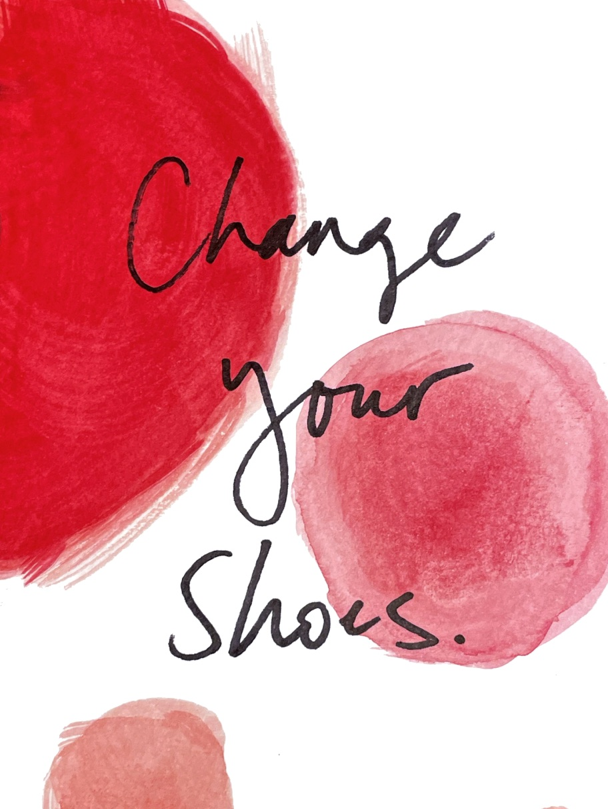

I am challenging:
Janelle

Meet the challenging people who own The Frameworks. Janelle, our Senior Writer and Editor, encourages fellow Frameworkers to shake things up with their footwear and B2B brands to get in touch with their musical side.
Last time, Charlotte challenged Janelle, who used to perform improv comedy in her spare time, to tell us her best joke. Let’s see what she’s got.
Currently, my best joke comes from my ten-year-old nephew: Why did the boy eat his homework? Because the teacher told him it was a piece of cake!
A perfect joke, no notes. We’ve got word play and dessert wrapped into one. For all of my future comedic endeavors, I’m going to consult him first.
I am challenging myself to learn Italian
In the past year, I’ve taken a handful of classes and listened to lots of audio lessons on walks and long drives. One of my faves is this bite-sized podcast that covers the basics while helping you sound like a local (a girl can dream!). But sadly, I’ve fallen out of the habit and I miss it.
Learning a new language opens up my brain and my world, making me think about grammar and sentence structure in different ways and helping me connect with people when I travel. My plan is to get back to it on a daily basis. Andiamo!
I am challenging my colleagues to wear a different pair of shoes
This is an improv trick that one of my teachers shared. He said if you ever feel like you’re getting into a rut onstage, doing the same bits and characters over and over again, wear a different pair of shoes next time. They’ll change your posture, how you stand, how you walk and feel and move around the stage. It’s an easy way to shake things up and get out of your head.
I’ve found that this trick works in all walks of life. If you’re ever feeling stuck on a project or in need of a creative breakthrough, swap in a rarely worn pair of sneakers or flats. They’ll offer a quick shift in perspective, fresh energy and a dash of different style to boot.
“I am challenging James, whose level-headed wisdom guides our team at The Frameworks every day, to share his top three pieces of advice for someone just entering the industry.”
I am challenging you to strike up a conversation with a stranger
It feels like so much of life is lived online now, even in public spaces. I include myself in this when I say it’s easy to stick to your bubble and pull out your phone to pass the time.
So next time you’re at a coffee shop or pub, taking the train or waiting in line for a show, keep your phone in your pocket. Resist putting it between yourself and the people around you, and see what happens. It doesn’t have to be anything big, just a quick exchange that reminds us that we’re here and we’re human.